Fun with Flow Models
Project 3 · Ariq Koh · CS180, Fall 2026 · editing with a pretrained flow model and flow matching on MNIST
Part A uses PixNerd (PixNerd-XXL-P16-T2I), a pretrained text-to-image flow model that works directly on 512×512 pixels. No training is involved. Time runs from noise at t = 0 to a clean image at t = 1, with the path x_t = (1 − t) · ε + t · x, so the model's velocity target is x − ε. Euler steps use h = 0.02, classifier-free guidance uses w = 7, and the seed is 180 throughout. Prompts are encoded by the supplied model.encode, and the unconditional branch uses the empty string. All runs were done in float32 on a Colab GPU.
A1 Visualizing training and sampling
The image for Sections 1.1 to 1.5 is an image of the Nanyang Business School building and The Hive at NTU Singapore. Its structure at several scales (windows, railings, foliage, flat sky) makes the differences between the denoisers easy to see. The notebook's supplied preprocessing center-crops it to a square. The square crop used is shown below.
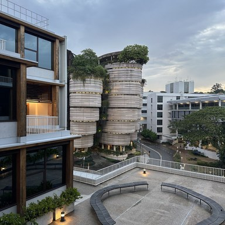
1.1 Constructing noisy training inputs
interpolate mixes the image with one fixed noise tensor. The same noise is reused at all three times, so the three noisy images differ only in how much of it is blended in. At t = 0 it returns the noise exactly and at t = 1 the image exactly, and both endpoints are asserted.
def interpolate(image, noise, t):
return (1 - t) * noise + t * image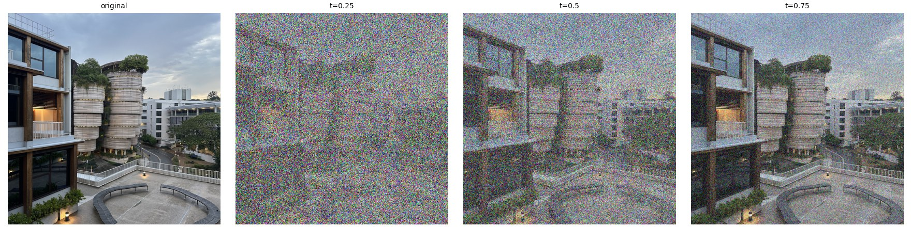
1.2 Classical denoising
The noisy image is first divided by t to restore the image's amplitude, since x_t / t = x + ((1 − t) / t) · ε. A Gaussian blur then averages the remaining noise away. The blur strength was swept over σ = 1, 2, 4, 8 and 16 and the value with the lowest mean squared error against the clean image was kept at each time. That gave σ = 8 at t = 0.25, 4 at 0.50 and 1 at 0.75. A more heavily corrupted input needs a wider blur, and every extra bit of blur also removes real detail, which is why the optimum shrinks as t grows.
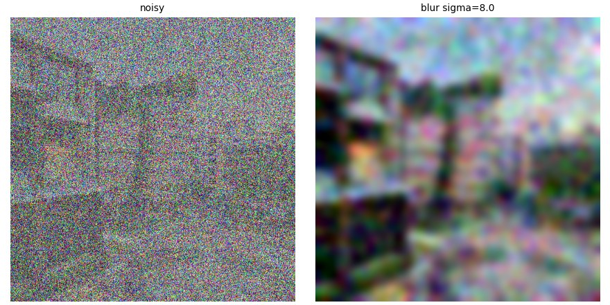
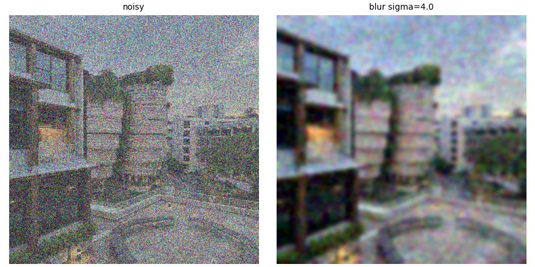
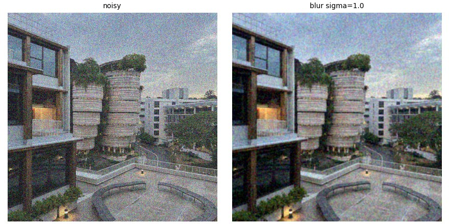
1.3 One-step denoising
The network predicts a velocity, not noise, so a single step to the end of the path is x̂ = x_t + (1 − t) · v(x_t, t, c). The prompt is "a high quality photo". The velocity's shape, dtype, device and finiteness are checked before use.
def one_step_denoise(x, t, condition, predict_velocity):
return x + (1 - t) * predict_velocity(x, t, condition)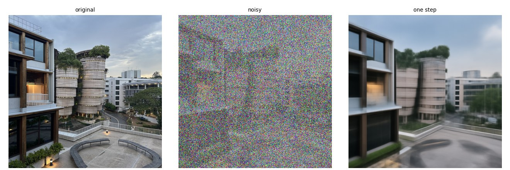
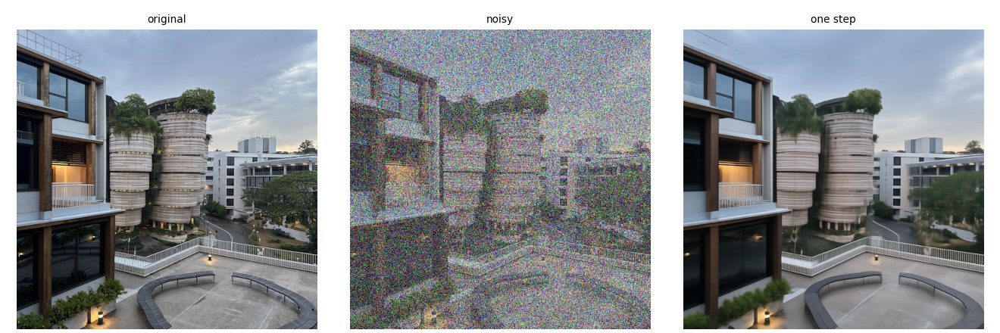
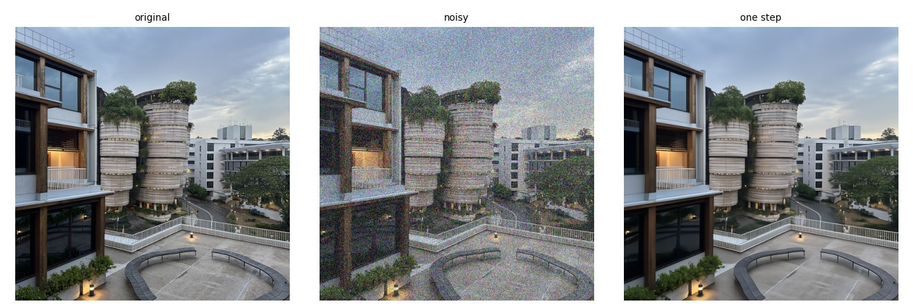
1.4 Visualizing velocity
For each time the predicted update (1 − t) · v̂ is compared with the ground-truth update (1 − t) · (x − ε) = x − x_t. The error map is the per-pixel RMS over the three color channels of their difference. The updates share one symmetric color scale with zero at middle gray, and the error maps share one limit across the three times.
@torch.inference_mode()
def velocity_diagnostics(x_t, t, clean_image, epsilon, condition, predict_velocity):
"""Return predicted_update, ground_truth_update, and error_map.
Both updates have shape (B, 3, H, W).
The error map has shape (B, H, W): average only over RGB, keeping each pixel.
Return raw values before display scaling or clipping.
"""
predicted_update = (1 - t) * predict_velocity(x_t, t, condition)
target_update = (1 - t) * (clean_image - epsilon)
error_map = ((predicted_update - target_update) ** 2).mean(dim=1).sqrt()
return predicted_update, target_update, error_map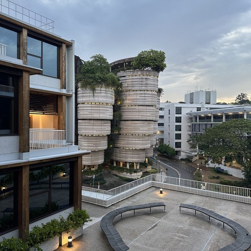
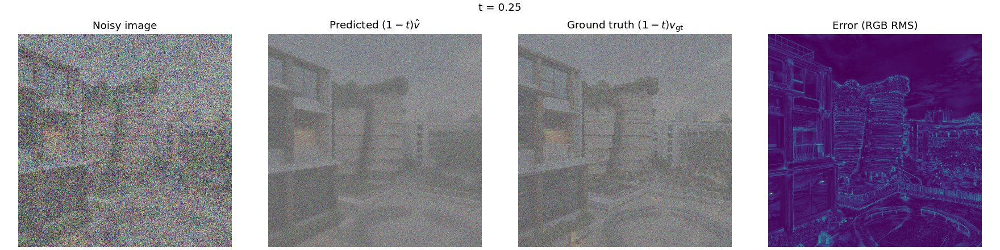
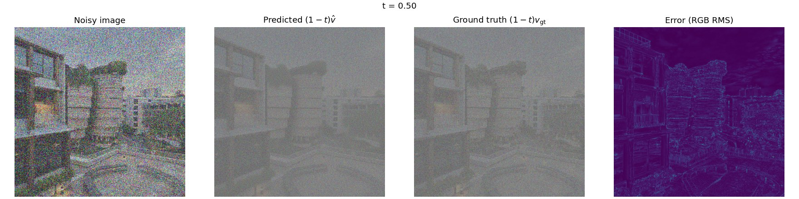
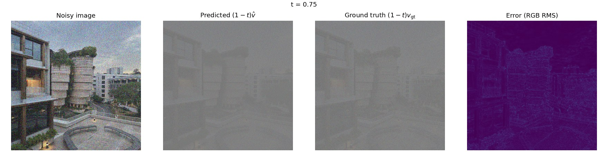
1.5 Iterative denoising with Euler sampling
euler_sample integrates dx/dt = v(x, t) from t_start to 1. The step count is fixed up front and each time is recomputed from the step index, so floating-point error does not accumulate. The last step is shortened to land exactly on t = 1, and the velocity is re-evaluated after every update. A constant velocity field was used to check it: starting at 0, 0.5 and 0.93 with h = 0.02 takes 50, 25 and 4 evaluations, and the result is exactly 1 − t_start every time.
@torch.inference_mode()
def euler_sample(x_start, t_start, step_size, velocity):
"""Integrate dx/dt = velocity(x, t) from t_start to 1. Returns the final x and a list of (t, x) states."""
num_steps = math.ceil((1 - t_start) / step_size - 1e-9)
x = x_start
states = [(t_start, x.clone())]
for i in range(num_steps):
# t is recomputed from i so float error does not accumulate, and the last step is shortened to land on 1
t = t_start + i * step_size
h = min(step_size, 1 - t)
x = x + h * velocity(x, t)
states.append((1.0 if i == num_steps - 1 else t + h, x.clone()))
return x, statesStarting from the t = 0.50 noisy image, 25 updates reach t = 1. Figure 13 shows the initial state, every fifth update and the final result.
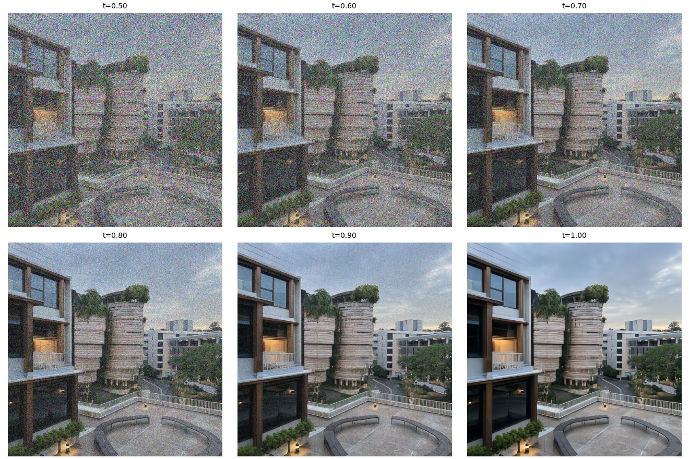
Figure 14 compares the four methods on the same noisy input. Blur gives a soft image with color noise, one step gives a sharp but partly invented image, and the 25-step result is nearly indistinguishable from the original. Each step only has to correct a small part of the noise, and its velocity is re-estimated from an already cleaner image, which a single large jump cannot do.
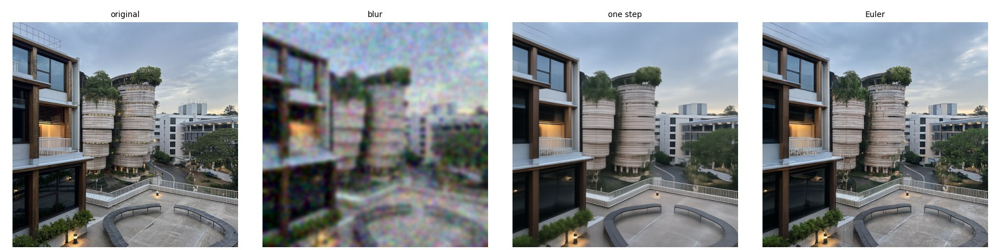
1.6 Generating images from noise
Five Gaussian initial states (seeds 180 to 184) are integrated from t = 0 with 50 Euler steps and the prompt "a high quality photo". All five samples are close-up portraits of people. The generic prompt carries almost no subject information, and the model falls back on the most common kind of high-quality photograph, a face. Quality is uneven: seeds 180, 181 and 183 show distorted faces or skin.
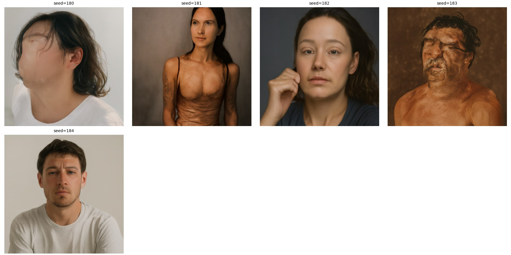
"a high quality photo" and no guidance.A2 Conditional generation and guidance
Classifier-free guidance extrapolates away from the unconditional prediction: v_cfg = v_c + w · (v_c − v_u). Both predictions use the same x_t and t, and w = 0 returns v_c exactly, which is asserted. The unconditional branch uses the embedding of the empty string.
def cfg_velocity(x, t, condition, w, predict_velocity, null_condition=''):
v_c = predict_velocity(x, t, condition)
if w == 0:
return v_c
v_u = predict_velocity(x, t, null_condition)
return v_c + w * (v_c - v_u)Figure 16 uses the same five noises as Section 1.6 with w = 7. The layouts carry over, for example the hand at the cheek in seed 182 and the frontal pose in seed 184, because the noise fixes the composition. Guidance changes the quality. The faces become clean and symmetric, the lighting looks like a studio portrait, and the distorted anatomy of seeds 180, 181 and 183 is gone. The price is variety: all five are plain front-lit headshots on a dark or white backdrop.
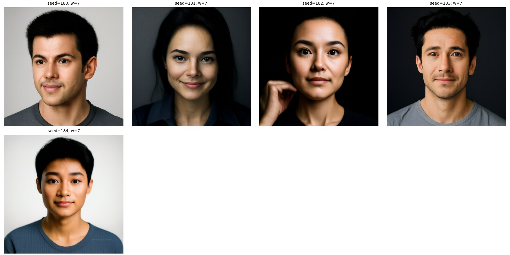
A3 Creative applications
3.1 Image-to-image editing
edit follows the SDEdit idea. The image is noised to a chosen time with interpolate and then denoised back to t = 1 with guided Euler steps and the prompt "a high quality photo". The start times are 0.02, 0.04, 0.06, 0.10, 0.14, 0.25 and 0.50. An early start (low t) discards almost everything, and a late start keeps the layout.
def edit(image, noise, t_start, condition, predict_velocity, w=7, step_size=0.02):
x = interpolate(image, noise, t_start)
velocity = lambda x, t: cfg_velocity(x, t, condition, w, predict_velocity, null_condition)
return euler_sample(x, t_start, step_size, velocity)[0]The pattern is the same for every input. For t ≤ 0.10 the output has little to do with the image, and the generic prompt pulls it toward people and objects. Around 0.14 to 0.25 the layout and colors return with invented details. At 0.50 the result is close to the original.
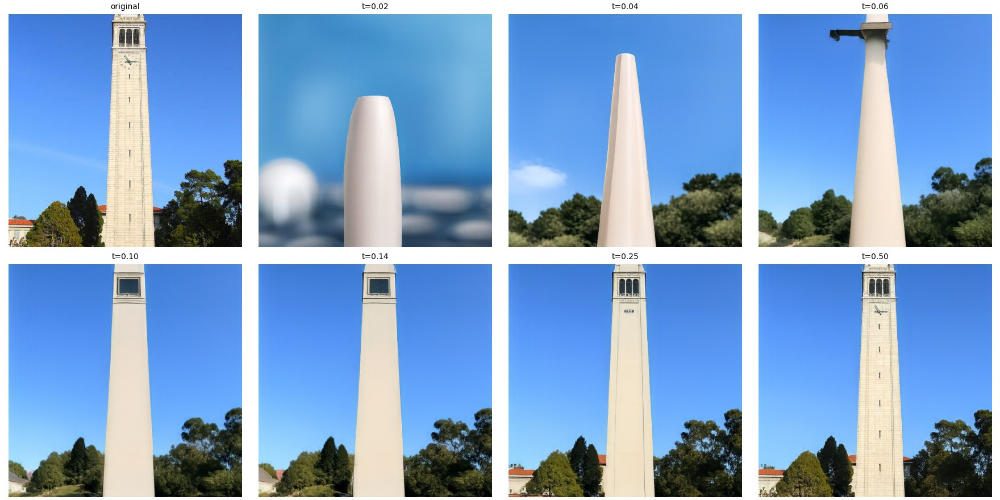
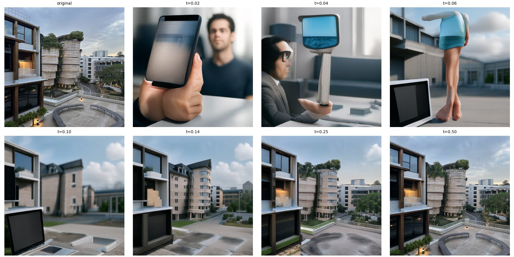
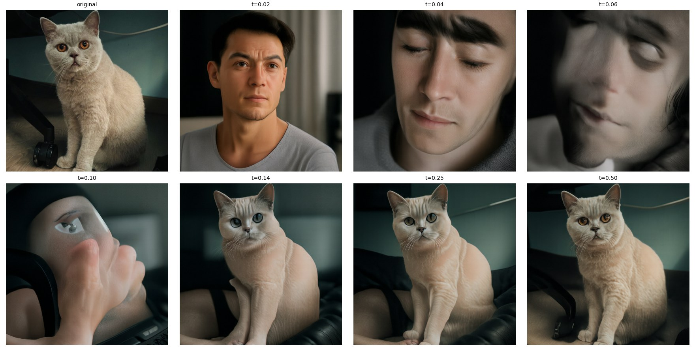
Figures 20 to 22 repeat the procedure on one web image and two hand drawings.
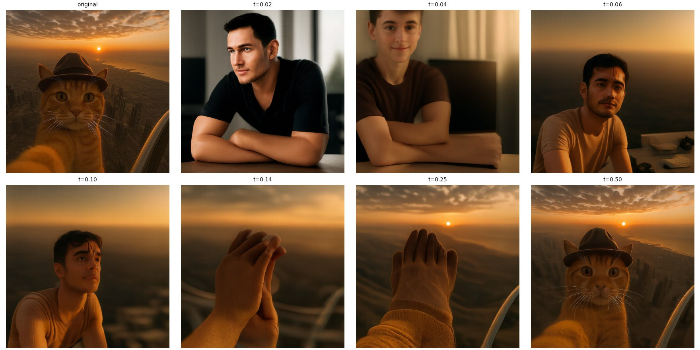
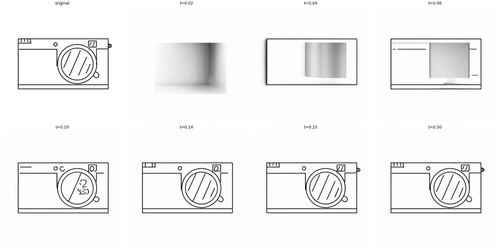
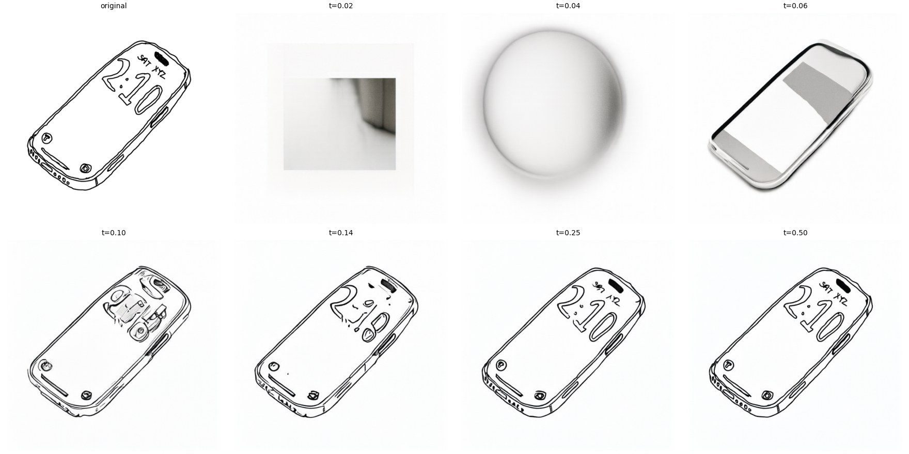
3.2 Text-guided image editing
The procedure is the same, with the generic prompt replaced by a description of the edit. A low start time gives the prompt the most room, and a high start time preserves the original.
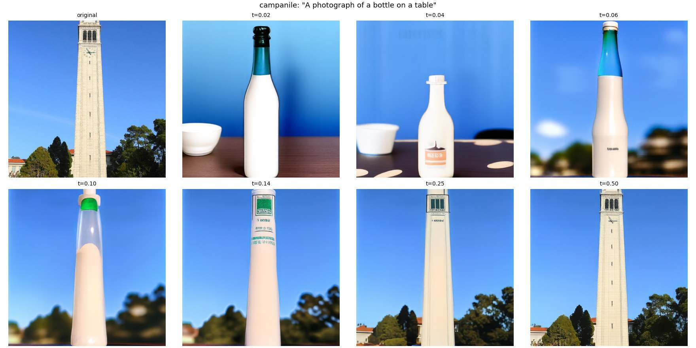
"A photograph of a bottle on a table". The tower becomes a bottle by 0.02 to 0.14, with the blue sky kept as the backdrop. At 0.25 a tapered white tower remains, and at 0.50 the original is nearly restored.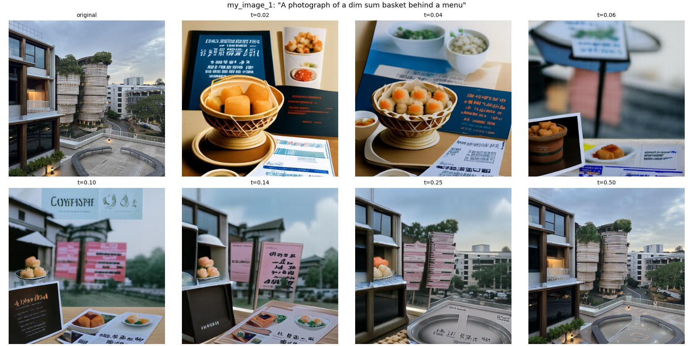
"A photograph of a dim sum basket behind a menu". Baskets and menus fill the frame at 0.02 to 0.06, and from 0.10 to 0.25 the menu and food sit in front of a blurred version of the building. The building dominates at 0.50.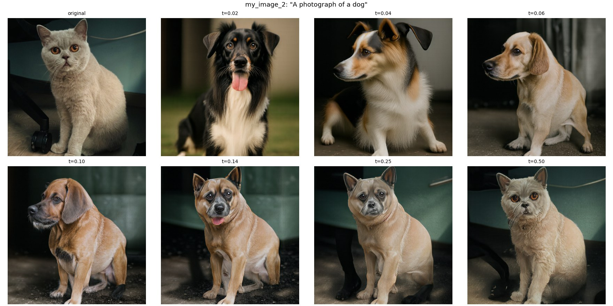
"A photograph of a dog". Dogs of various breeds appear up to 0.10. At 0.14 and 0.25 a dog's face sits on the cat's pose and background, and at 0.50 a cat keeps its orange eyes while the ears and snout turn dog-like.3.3 Visual anagrams
A visual anagram is one image that reads as one prompt upright and as another when rotated 180°. At every Euler step the upright image is guided toward the first prompt. A rotated copy of the image is guided toward the second prompt, and its predicted velocity is rotated back so it lines up with the original pixels. The two velocities are averaged. The flip rotates both spatial axes, so it is its own inverse.
def visual_anagrams(noise, condition_a, condition_b, predict_velocity, w=7, step_size=0.02):
def velocity(x, t):
v_a = cfg_velocity(x, t, condition_a, w, predict_velocity, null_condition)
# the second prompt sees the rotated image, and its velocity is rotated back
v_b = rotate180(cfg_velocity(rotate180(x), t, condition_b, w, predict_velocity, null_condition))
return (v_a + v_b) / 2
return euler_sample(noise, 0, step_size, velocity)[0]Two pairs are shown, each upright on the left and rotated on the right. The Mickey Mouse and castle pair works best: the ears and face of the mouse become the towers and gate of the castle when flipped. In the cat and forest pair the cat is clear upright, and flipped the trees dominate with a faint cat remaining.
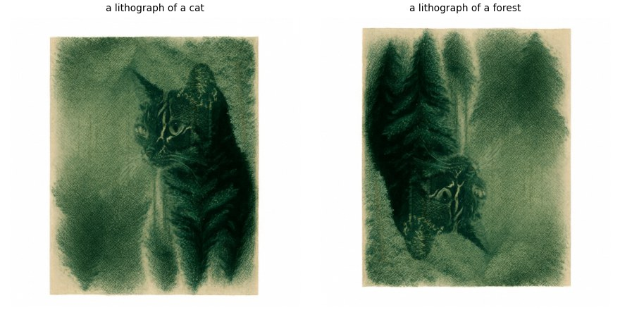
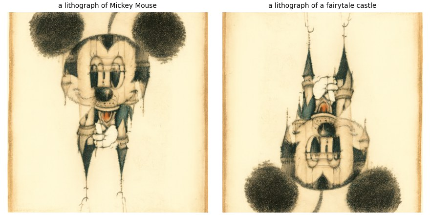
3.4 Hybrid images
A hybrid image shows one subject up close and another from far away. The method adapts Factorized Diffusion. Each step uses the low frequencies of the velocity for one prompt and the high frequencies for another, v = lowpass(v_a) + v_b − lowpass(v_b). The low-pass is a Gaussian blur with kernel size 265 and σ = 16 at 512×512. Prompt a sets the coarse structure seen from a distance, and prompt b supplies the fine detail seen up close.
def make_hybrids(noise, condition_a, condition_b, predict_velocity, w=7, step_size=0.02):
def velocity(x, t):
v_a = cfg_velocity(x, t, condition_a, w, predict_velocity, null_condition)
v_b = cfg_velocity(x, t, condition_b, w, predict_velocity, null_condition)
# low frequencies from a, high frequencies from b
return lowpass(v_a) + v_b - lowpass(v_b)
return euler_sample(noise, 0, step_size, velocity)[0]Each hybrid has a slider that shrinks it, as in viewing from farther away. The castle hybrid works: the dark ears of Mickey Mouse appear from far away, and the castle's towers and brick dominate up close. The cat and forest hybrid is weaker. It reads as a forest up close, and at a distance only a vague shape remains, with the cat's tail visible at the bottom left.
(In print, each slider below is frozen at its starting, close-up position. View the live page for the working slider.)
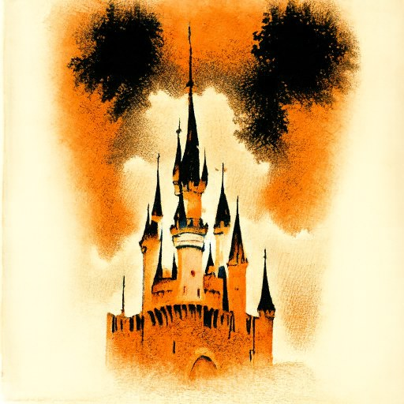
B1 Single-step denoising UNet
Part B builds flow matching from scratch on MNIST, with pixels in [0, 1] and only the 60,000 training images used for training. The UNet is built from the operations the assignment lists. Each is followed by BatchNorm and GELU. Conv keeps the resolution and changes the channels, DownConv and UpConv halve and double it, Flatten average-pools 7×7 to 1×1, and Unflatten goes back up with a transposed convolution. ConvBlock, DownBlock and UpBlock pair one of the resampling ops with an extra Conv.
class Conv(nn.Module):
def __init__(self, in_channels: int, out_channels: int):
super().__init__()
self.net = nn.Sequential(nn.Conv2d(in_channels, out_channels, 3, 1, 1), nn.BatchNorm2d(out_channels), nn.GELU())
def forward(self, x: torch.Tensor) -> torch.Tensor:
return self.net(x)
class DownConv(nn.Module):
def __init__(self, in_channels: int, out_channels: int):
super().__init__()
self.net = nn.Sequential(nn.Conv2d(in_channels, out_channels, 3, 2, 1), nn.BatchNorm2d(out_channels), nn.GELU())
def forward(self, x: torch.Tensor) -> torch.Tensor:
return self.net(x)
class UpConv(nn.Module):
def __init__(self, in_channels: int, out_channels: int):
super().__init__()
self.net = nn.Sequential(nn.ConvTranspose2d(in_channels, out_channels, 4, 2, 1), nn.BatchNorm2d(out_channels), nn.GELU())
def forward(self, x: torch.Tensor) -> torch.Tensor:
return self.net(x)
class Flatten(nn.Module):
def __init__(self):
super().__init__()
# 7x7 -> 1x1
self.net = nn.Sequential(nn.AvgPool2d(7), nn.GELU())
def forward(self, x: torch.Tensor) -> torch.Tensor:
return self.net(x)
class Unflatten(nn.Module):
def __init__(self, in_channels: int):
super().__init__()
# 1x1 -> 7x7
self.net = nn.Sequential(nn.ConvTranspose2d(in_channels, in_channels, 7, 7), nn.BatchNorm2d(in_channels), nn.GELU())
def forward(self, x: torch.Tensor) -> torch.Tensor:
return self.net(x)
class ConvBlock(nn.Module):
def __init__(self, in_channels: int, out_channels: int):
super().__init__()
self.net = nn.Sequential(Conv(in_channels, out_channels), Conv(out_channels, out_channels))
def forward(self, x: torch.Tensor) -> torch.Tensor:
return self.net(x)
class DownBlock(nn.Module):
def __init__(self, in_channels: int, out_channels: int):
super().__init__()
self.net = nn.Sequential(DownConv(in_channels, out_channels), ConvBlock(out_channels, out_channels))
def forward(self, x: torch.Tensor) -> torch.Tensor:
return self.net(x)
class UpBlock(nn.Module):
def __init__(self, in_channels: int, out_channels: int):
super().__init__()
self.net = nn.Sequential(UpConv(in_channels, out_channels), ConvBlock(out_channels, out_channels))
def forward(self, x: torch.Tensor) -> torch.Tensor:
return self.net(x)The UNet has two downsampling blocks (28 → 14 → 7), a bottleneck that pools to 1×1 and expands again, and two upsampling blocks. Skip connections concatenate each decoder input with the encoder feature at the same resolution, including the full-resolution one.
class UnconditionalUNet(nn.Module):
def __init__(self, in_channels: int, num_hiddens: int):
super().__init__()
D = num_hiddens
self.conv0 = ConvBlock(in_channels, D)
self.down1 = DownBlock(D, D)
self.down2 = DownBlock(D, 2 * D)
self.flat = Flatten()
self.unflat = Unflatten(2 * D)
self.up1 = UpBlock(4 * D, D)
self.up2 = UpBlock(2 * D, D)
self.conv1 = ConvBlock(2 * D, D)
self.out = nn.Conv2d(D, in_channels, 3, 1, 1)
def forward(self, x: torch.Tensor) -> torch.Tensor:
assert x.shape[-2:] == (28, 28), "Expect input shape to be (28, 28)."
x0 = self.conv0(x)
x1 = self.down1(x0)
x2 = self.down2(x1)
u = self.unflat(self.flat(x2))
u = self.up1(torch.cat([u, x2], dim=1))
u = self.up2(torch.cat([u, x1], dim=1))
u = self.conv1(torch.cat([u, x0], dim=1))
return self.out(u)1.2 The noising process
Training pairs are built by adding noise, z = x + σε with ε ∼ N(0, I). Figure 30 shows the same eight test digits for σ = 0.0, 0.2, 0.4, 0.5, 0.6, 0.8 and 1.0, from top to bottom.
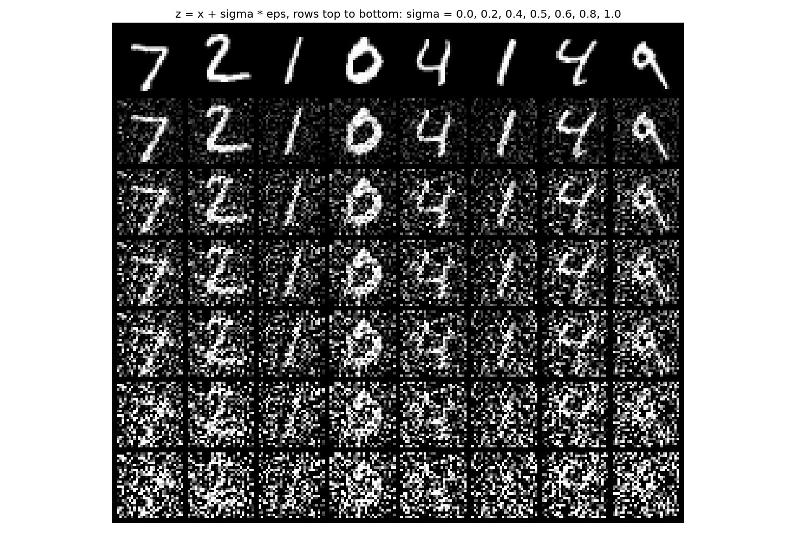
1.2.1 Training at σ = 0.5
The denoiser has hidden width D = 128 and minimizes the MSE to the clean digit. It trains for 5 epochs with Adam at a learning rate of 1e-4, batch size 256 and shuffled data. Noise is sampled fresh for every batch, so each epoch sees new noise.
@torch.inference_mode()
def show_denoised(model, z: torch.Tensor, title: str, filename: str):
model.eval()
show_grid(torch.cat([z, model(z), test_images]), title + " (rows: input, output, clean)", filename, nrow=8)
model.train()
def train_denoiser(model, optimizer, make_input, num_epochs: int, tag: str):
losses = []
# one noise draw for the test digits so epoch 1 and the last epoch are comparable
test_z = make_input(test_images)
model.train()
for epoch in range(1, num_epochs + 1):
for images, _ in tqdm(train_loader, desc=f"epoch {epoch}", leave=False):
images = images.to(device)
# fresh noise every batch
outputs = model(make_input(images))
loss = criterion(outputs, images)
optimizer.zero_grad()
loss.backward()
optimizer.step()
losses.append(loss.item())
if epoch in (1, num_epochs):
show_denoised(model, test_z, f"{tag}, epoch {epoch}", f"{tag}_epoch{epoch}.png")
return losses
add_noise = lambda images: images + noise_level * torch.randn_like(images)
train_losses = train_denoiser(model, optimizer, add_noise, num_epochs, "denoiser")
torch.save(model.state_dict(), OUT / "denoiser.pt")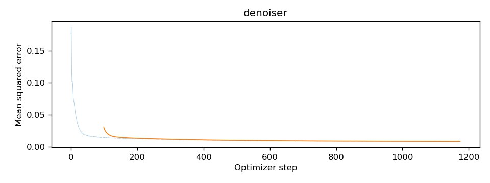
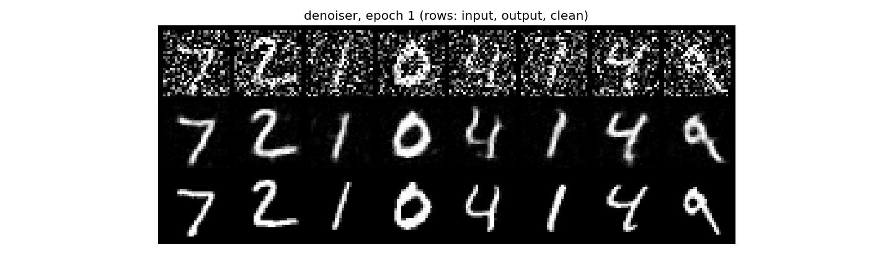
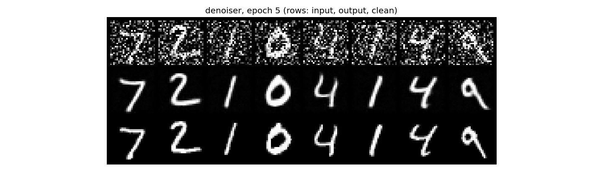
1.2.2 Out-of-distribution noise levels
The model, trained only at σ = 0.5, is run on the same digits at every noise level. Each pair of rows is the noisy input and the output, from σ = 0.0 at the top to 1.0 at the bottom. Quality holds up to σ = 0.5 and even at 0.0 and 0.2, where the clean input is returned with a little smoothing. At 0.6 the thin “1” begins to fade. At 0.8 and 1.0 several digits turn into other shapes, with the 7 becoming a 2-like stroke and the 1 a tangle, because the noise is stronger than anything seen in training.
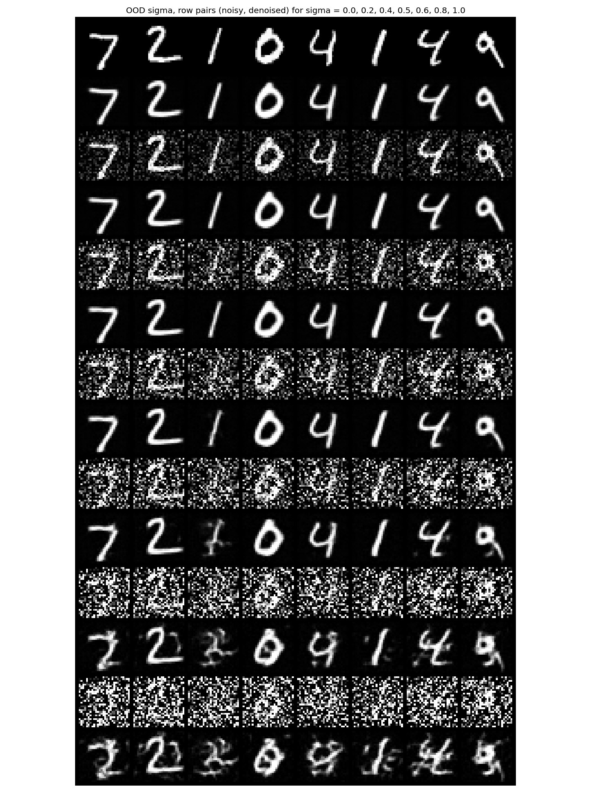
1.2.3 Denoising pure noise
The same setup is retrained with the input replaced by pure noise z = ε, and the target is still a clean digit. The loss drops almost immediately and then stays flat, since the input holds no information about the digit. After both epoch 1 and epoch 5, every output is the same blurry, digit-like blob, whatever noise goes in.
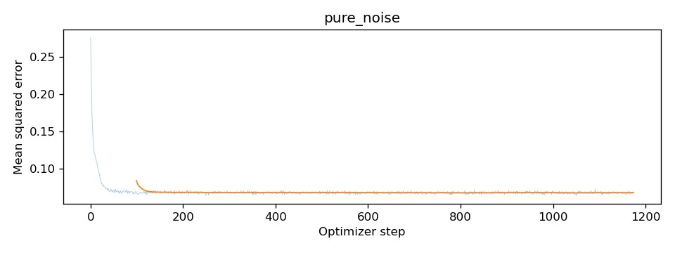
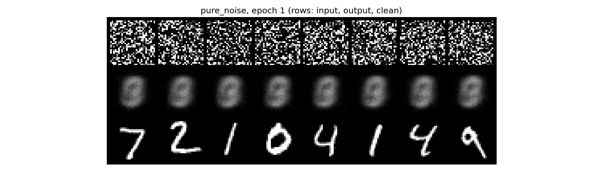
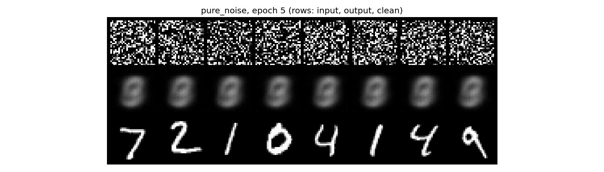
The MSE-optimal prediction for an input z is the conditional mean E[x | z]. Pure noise is independent of the digit, so E[x | z] = E[x], which is the average of all training digits. The model learns that centroid for any input. Averaging 60,000 digits of every class and style gives a blurred shape that resembles an overlap of 0, 3, 8 and 9, with a bright center and dark corners. Figure 38 puts a model output next to the pixel-wise mean of the training set.
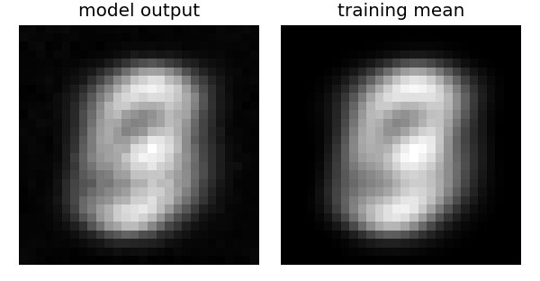
B2 Flow matching
The next two models learn a velocity field instead of a denoised image. With x_0 ∼ N(0, I) and a clean digit x_1, the training point is x_t = (1 − t) · x_0 + t · x_1 with t ∼ U[0, 1], and the network regresses the constant velocity x_1 − x_0 with an MSE loss. Sampling starts from noise and takes Euler steps along the predicted velocity.
2.1 Time-conditioned UNet
t is passed through an FCBlock (Linear → GELU → Linear) and the result multiplies the activations at two points: the unflatten output (by t1) and the first up-block output (by t2).
class FCBlock(nn.Module):
def __init__(self, in_channels: int, out_channels: int):
super().__init__()
self.net = nn.Sequential(nn.Linear(in_channels, out_channels), nn.GELU(), nn.Linear(out_channels, out_channels))
def forward(self, x: torch.Tensor) -> torch.Tensor:
return self.net(x)
class TimeConditionalUNet(nn.Module):
def __init__(self, in_channels: int, num_classes: int, num_hiddens: int):
super().__init__()
D = num_hiddens
self.conv0 = ConvBlock(in_channels, D)
self.down1 = DownBlock(D, D)
self.down2 = DownBlock(D, 2 * D)
self.flat = Flatten()
self.unflat = Unflatten(2 * D)
self.up1 = UpBlock(4 * D, D)
self.up2 = UpBlock(2 * D, D)
self.conv1 = ConvBlock(2 * D, D)
self.out = nn.Conv2d(D, in_channels, 3, 1, 1)
self.fc1_t = FCBlock(1, 2 * D)
self.fc2_t = FCBlock(1, D)
def forward(self, x: torch.Tensor, t: torch.Tensor) -> torch.Tensor:
"""
Args:
x: (N, C, H, W) input tensor.
t: (N,) normalized time tensor.
Returns:
(N, C, H, W) output tensor.
"""
assert x.shape[-2:] == (28, 28), "Expect input shape to be (28, 28)."
t = t.float().view(-1, 1)
t1 = self.fc1_t(t).view(-1, self.fc1_t.net[-1].out_features, 1, 1)
t2 = self.fc2_t(t).view(-1, self.fc2_t.net[-1].out_features, 1, 1)
x0 = self.conv0(x)
x1 = self.down1(x0)
x2 = self.down2(x1)
u = self.unflat(self.flat(x2)) * t1
u = self.up1(torch.cat([u, x2], dim=1)) * t2
u = self.up2(torch.cat([u, x1], dim=1))
u = self.conv1(torch.cat([u, x0], dim=1))
return self.out(u)2.2 Training
Training uses batch size 64, D = 64 and Adam with an initial learning rate of 1e-2. An ExponentialLR scheduler with gamma = 0.1 ** (1 / num_epochs) decays it to 1e-3 over the 10 epochs and steps once per epoch. The loss is dominated by the first few hundred iterations, so the plot is nearly flat afterwards.
def time_fm_forward(unet: TimeConditionalUNet, x_1: torch.Tensor, num_ts: int) -> torch.Tensor:
"""Algorithm 1
Args:
unet: TimeConditionalUNet
x_1: (N, C, H, W) input tensor.
num_ts: int, number of timesteps.
Returns:
(,) loss.
"""
unet.train()
x_0 = torch.randn_like(x_1)
t = torch.rand(x_1.shape[0], device=x_1.device)
x_t = (1 - t.view(-1, 1, 1, 1)) * x_0 + t.view(-1, 1, 1, 1) * x_1
return F.mse_loss(unet(x_t, t), x_1 - x_0)FM_BATCH, FM_HIDDEN, FM_EPOCHS, FM_LR = 64, 64, 10, 1e-2
SNAPSHOTS = (1, 5, 10)
def train_fm(fm: nn.Module, conditional: bool, lr: float, use_scheduler: bool, sample_fn, tag: str):
loader = make_loader(FM_BATCH)
optimizer = torch.optim.Adam(fm.parameters(), lr=lr)
scheduler = torch.optim.lr_scheduler.ExponentialLR(optimizer, gamma=0.1 ** (1.0 / FM_EPOCHS)) if use_scheduler else None
losses, samples = [], {}
for epoch in range(1, FM_EPOCHS + 1):
fm.train()
for images, labels in tqdm(loader, desc=f"{tag} epoch {epoch}", leave=False):
images, labels = images.to(device), labels.to(device)
loss = fm(images, labels) if conditional else fm(images)
optimizer.zero_grad()
loss.backward()
optimizer.step()
losses.append(loss.item())
if scheduler:
scheduler.step()
if epoch in SNAPSHOTS:
samples[epoch] = sample_fn(fm)
torch.save(fm.state_dict(), OUT / f"{tag}_epoch{epoch}.pt")
print(f"{tag} epoch {epoch}: loss {sum(losses[-100:]) / 100:.4f}", flush=True)
return losses, samples
time_fm = TimeConditionalFM(TimeConditionalUNet(1, 10, FM_HIDDEN)).to(device)
time_losses, time_samples = train_fm(time_fm, False, FM_LR, True, lambda fm: fm.sample((28, 28), seed=0), "time_fm")
loss_plot(time_losses, "time_fm")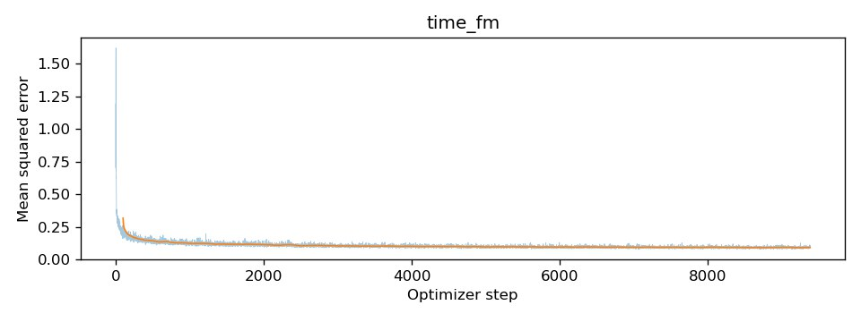
2.3 Sampling
Sampling takes 50 Euler steps with step size 1/50 from t = 0 to 1. Figures 40 to 42 show 40 samples after epochs 1, 5 and 10 from the same noise. After epoch 1 the samples are mostly scribbles with a few digit-like strokes. By epoch 10 most look like handwritten digits, though several are malformed or ambiguous. The model has no way to choose a digit, so each sample is a draw from the whole dataset, and it is far less reliable than the class-conditioned model.
@torch.inference_mode()
def time_fm_sample(unet: TimeConditionalUNet, img_wh: tuple[int, int], num_ts: int, seed: int = 0, n: int = 40) -> torch.Tensor:
"""Algorithm 2
Args:
unet: TimeConditionalUNet
img_wh: (H, W) output image width and height.
num_ts: int, number of timesteps.
seed: int, random seed.
n: int, number of images.
Returns:
(N, C, H, W) final sample.
"""
unet.eval()
g = torch.Generator().manual_seed(seed)
x = torch.randn(n, 1, *img_wh, generator=g).to(device)
for i in range(num_ts):
t = torch.full((n,), i / num_ts, device=device)
x = x + unet(x, t) / num_ts
return x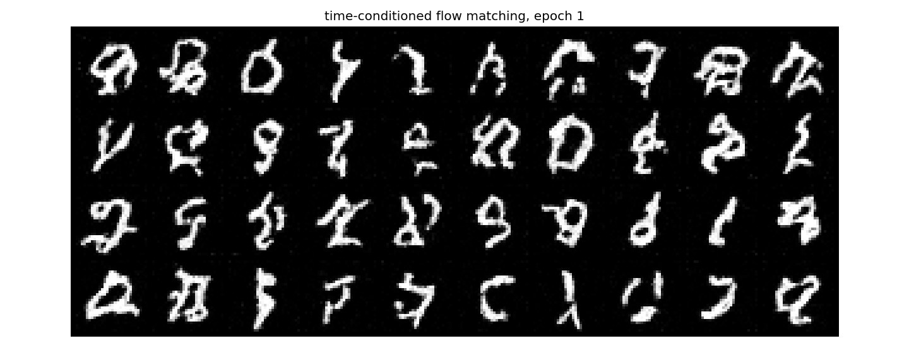
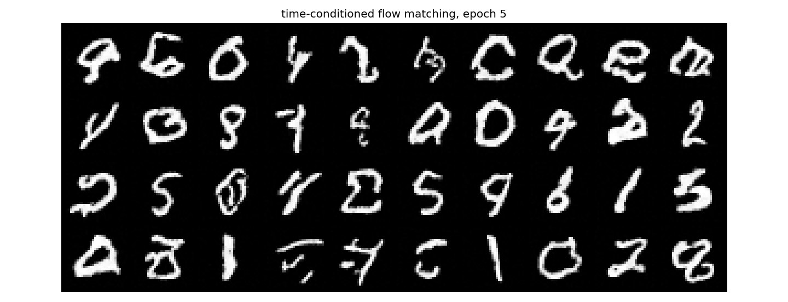
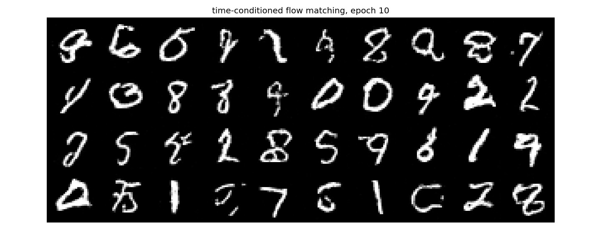
B3 Class-conditioned flow matching
2.4 Class-conditioned UNet
The class is a one-hot vector. A second FCBlock pair maps the class to scale factors, and the time embedding is added. The modulation is unflatten = c1 · unflatten + t1 and up1 = c2 · up1 + t2. With probability 0.1 the one-hot vector is zeroed during training, so the same network also learns the unconditional velocity needed for guidance.
class ClassConditionalUNet(nn.Module):
def __init__(self, in_channels: int, num_classes: int, num_hiddens: int):
super().__init__()
D = num_hiddens
self.num_classes = num_classes
self.conv0 = ConvBlock(in_channels, D)
self.down1 = DownBlock(D, D)
self.down2 = DownBlock(D, 2 * D)
self.flat = Flatten()
self.unflat = Unflatten(2 * D)
self.up1 = UpBlock(4 * D, D)
self.up2 = UpBlock(2 * D, D)
self.conv1 = ConvBlock(2 * D, D)
self.out = nn.Conv2d(D, in_channels, 3, 1, 1)
self.fc1_t = FCBlock(1, 2 * D)
self.fc1_c = FCBlock(num_classes, 2 * D)
self.fc2_t = FCBlock(1, D)
self.fc2_c = FCBlock(num_classes, D)
def forward(self, x: torch.Tensor, c: torch.Tensor, t: torch.Tensor, mask: Optional[torch.Tensor] = None) -> torch.Tensor:
"""
Args:
x: (N, C, H, W) input tensor.
c: (N,) int64 condition tensor.
t: (N,) normalized time tensor.
mask: (N,) mask tensor. If not None, mask out condition when mask == 0.
Returns:
(N, C, H, W) output tensor.
"""
assert x.shape[-2:] == (28, 28), "Expect input shape to be (28, 28)."
c = F.one_hot(c, self.num_classes).float()
if mask is not None:
c = c * mask.float().view(-1, 1)
t = t.float().view(-1, 1)
c1 = self.fc1_c(c).view(x.shape[0], -1, 1, 1)
t1 = self.fc1_t(t).view(x.shape[0], -1, 1, 1)
c2 = self.fc2_c(c).view(x.shape[0], -1, 1, 1)
t2 = self.fc2_t(t).view(x.shape[0], -1, 1, 1)
x0 = self.conv0(x)
x1 = self.down1(x0)
x2 = self.down2(x1)
u = c1 * self.unflat(self.flat(x2)) + t1
u = c2 * self.up1(torch.cat([u, x2], dim=1)) + t2
u = self.up2(torch.cat([u, x1], dim=1))
u = self.conv1(torch.cat([u, x0], dim=1))
return self.out(u)def class_fm_forward(unet: ClassConditionalUNet, x_1: torch.Tensor, c: torch.Tensor, p_uncond: float, num_ts: int) -> torch.Tensor:
"""Algorithm 3
Args:
unet: ClassConditionalUNet
x_1: (N, C, H, W) input tensor.
c: (N,) int64 condition tensor.
p_uncond: float, probability of unconditioning the condition.
num_ts: int, number of timesteps.
Returns:
(,) loss.
"""
unet.train()
x_0 = torch.randn_like(x_1)
t = torch.rand(x_1.shape[0], device=x_1.device)
x_t = (1 - t.view(-1, 1, 1, 1)) * x_0 + t.view(-1, 1, 1, 1) * x_1
# drop the class for a p_uncond fraction of the batch
mask = (torch.rand(x_1.shape[0], device=x_1.device) >= p_uncond).float()
return F.mse_loss(unet(x_t, c, t, mask), x_1 - x_0)2.5 Training
Training matches Section 2.2 and also draws the class labels. Figure 43 shows the loss.
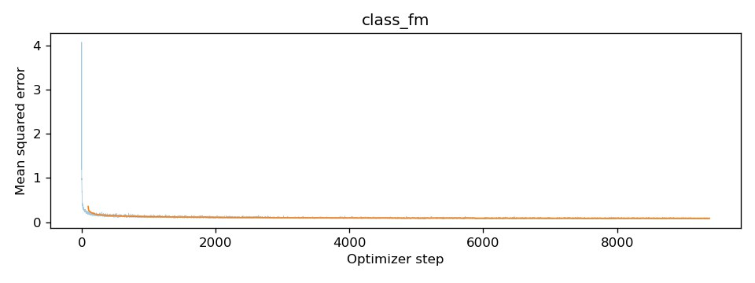
2.6 Sampling with classifier-free guidance
Sampling uses 300 Euler steps and guidance scale γ = 5, with u = u_uncond + γ · (u_cond − u_uncond). This is a different convention from Part A, where the guided velocity is v_c + w · (v_c − v_u), so w there corresponds to γ − 1 here. Each figure shows four instances of every digit, one row per instance. After epoch 1 the digits are already recognizable but have broken strokes and noisy backgrounds (the 4, 5 and 9 are the worst). By epoch 5 they are mostly clean, and by epoch 10 every sample is a clean, correctly labeled digit with a different handwriting style per row.
@torch.inference_mode()
def class_fm_sample(unet: ClassConditionalUNet, c: torch.Tensor, img_wh: tuple[int, int], num_ts: int,
guidance_scale: float = 5.0, seed: int = 0) -> torch.Tensor:
"""Algorithm 4
Args:
unet: ClassConditionalUNet
c: (N,) int64 condition tensor. Only for class-conditional
img_wh: (H, W) output image width and height.
num_ts: int, number of timesteps.
guidance_scale: float, CFG scale.
seed: int, random seed.
Returns:
(N, C, H, W) final sample.
(N, T_animation, C, H, W) caches.
"""
unet.eval()
n = c.shape[0]
g = torch.Generator().manual_seed(seed)
x = torch.randn(n, 1, *img_wh, generator=g).to(device)
c = c.to(device)
ones, zeros = torch.ones(n, device=device), torch.zeros(n, device=device)
caches = []
for i in range(num_ts):
t = torch.full((n,), i / num_ts, device=device)
u_c = unet(x, c, t, ones)
u_u = unet(x, c, t, zeros)
x = x + (u_u + guidance_scale * (u_c - u_u)) / num_ts
if (i + 1) % (num_ts // 10) == 0:
caches.append(x.cpu())
return x, torch.stack(caches, dim=1)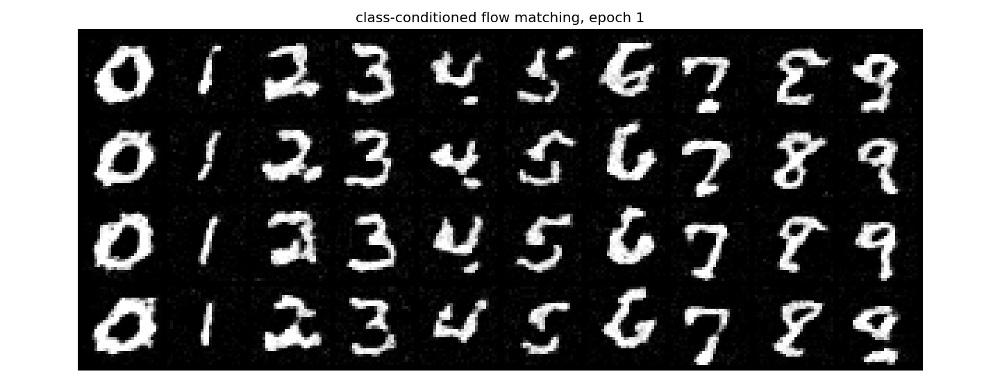
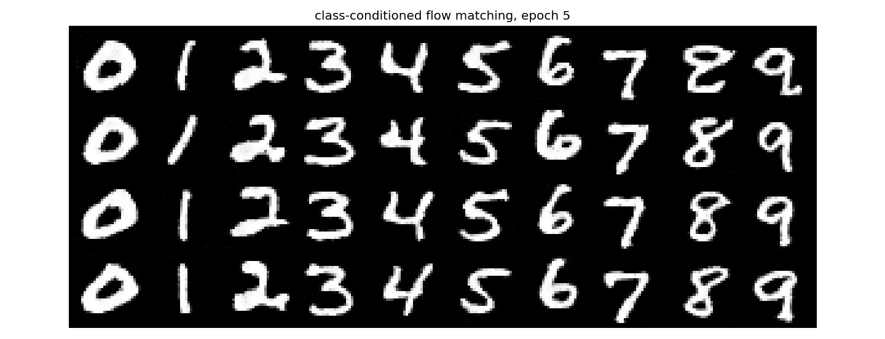
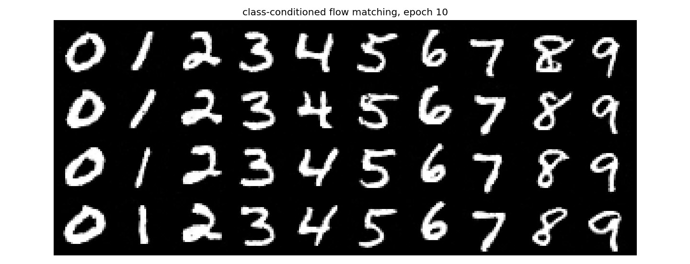
2.6 Removing the learning rate scheduler
For the ablation the scheduler is removed and the model is trained again for 10 epochs from the same seed. A constant rate has to serve both the early phase, where big steps help, and the late phase, where they add noise. To compensate, the constant rate was lowered to 1e-3, the value the scheduled run decays to. A constant 1e-2 was not tried. At 1e-3 the final samples are as clean and correctly labeled as the scheduled run's, with no difference visible by eye, and the loss curve is similar. On MNIST the scheduler therefore costs nothing but is not required if the rate is chosen sensibly. The risk of dropping it is that the start rate must be picked carefully, since there is no decay to recover from a rate that is too large.
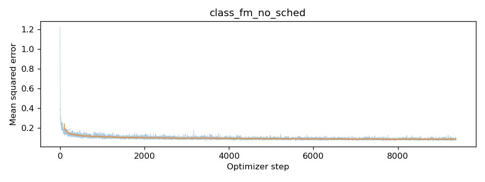
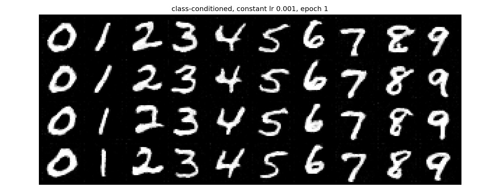
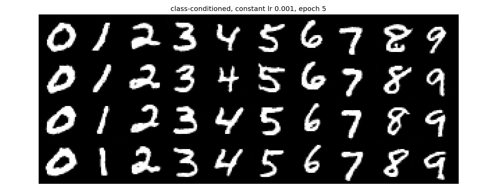
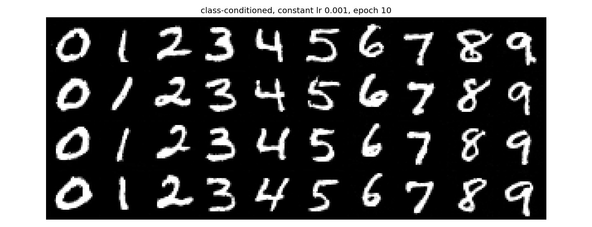